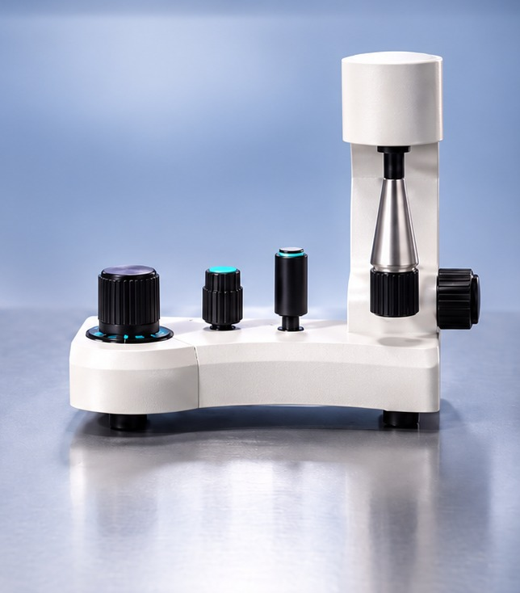
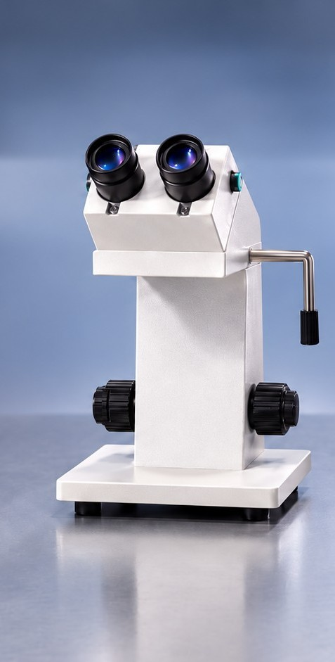
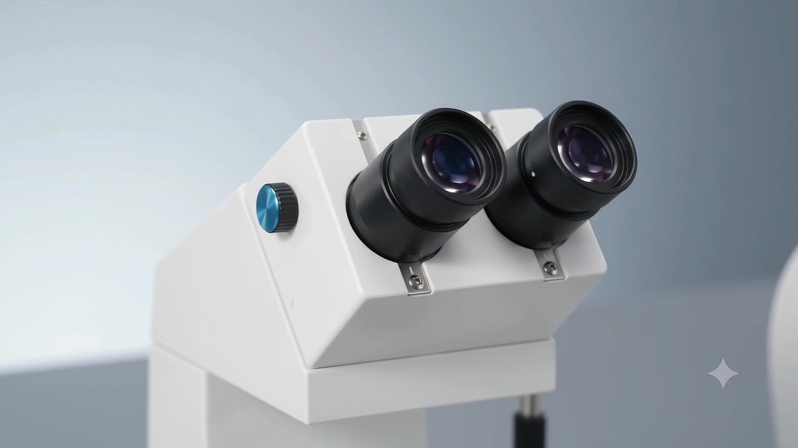

TrainICSI, the world's first micromanipulation training simulator.
A micromanipulation simulation system for clinical embryology — real controls, a real microscope, zero biological risk.
Timely, hands-on micromanipulation training is restricted — by regulation, and by cost.
Practising on real embryos and oocytes is tightly governed, and every attempt consumes a limited biological sample. Traditional hardware setups carry a high capital cost on top of that. The result: trainees wait for scarce supervised slots and end up observing far more than practising.
Meet TrainICSI.
Physical controls paired with a simulated microscope environment — practice no longer needs a biological sample, a lab slot or a supervisor standing by.
Every session, in context.
A trainee practices and sees local metrics instantly. That data syncs to the cloud, where it builds into cumulative measurement, AI-guided recommendations, trainer scoring and a readiness record.
Trainer dashboard
Review and score every trainee's practical sessions across the cohort — ICSI, embryo biopsy and more.
Student dashboard
Cumulative sessions, objective scores and AI-guided next steps — a running record of readiness for real ICSI work.
Controls that match the workstation.
Built to replicate the hand-eye coordination micromanipulation demands. Hover or tap a marker.

- Syringe / pressure control knob
- Stage movement control
- 3-axis coarse pipette control
- 3-axis precise pipette control
- Coarse & fine focus adjustment knobs
Not just a screen.
Trainees look through real eyepieces into a live simulated field — closer to the real procedure than any monitor-based trainer.


One platform, multiple procedures.
Module availability varies by release — ask us which are ready for your institution today.
Positioning, immobilisation, injection, aspiration and withdrawal.
Three ways to practice.
From assisted learning to independent, assessment-ready practice.
Guided
Learn with assistance.- Guided movement and control assistance
- Feedback as you work
- Progressive difficulty
Unguided
Independent, unassisted practice.- Realistic, unassisted practice
- Builds consistency and control
- Assessment preparation
Tutorial
Complex procedures, broken into skills.Practice is useful. Measured practice is better.
TrainICSI scores each session against configurable parameters and returns metrics, strengths and what to work on next.
PERFORMANCE ACROSS SESSIONS — ILLUSTRATIVE
Illustrative interface. Metrics, thresholds and scoring are configurable per institution and are not final.
Let the mistakes happen here, not in the lab.
TrainICSI logs technique errors as they happen — pressure, timing, handling — so a trainee sees exactly what to fix, long before it matters on a real oocyte.
- 00:01:48Needle approach within toleranceLOGGED
- 00:03:22Excessive holding pressure — oocyte deformedFLAGGED
- 00:05:10Sperm aspirated without full immobilisationFLAGGED
- 00:06:47Two sperm held too close together in the needleFLAGGED
- 00:08:15Clean injection and withdrawalLOGGED
- 00:09:53Over-deaspiration — bubbling observedFLAGGED
- 00:11:30Oocyte lost during handlingFLAGGED
- 00:13:02Needle-breaking eventFLAGGED
Scale training. Not your laboratory budget.
Growing demand for trained embryologists doesn't have to mean another microscope, micromanipulator or lab bay. TrainICSI adds practice capacity alongside your existing setup — measurable and repeatable, without lakhs in additional equipment.
Scale
Train larger cohorts within the same lab footprint.
Standardise
Give every trainee a consistent practice environment.
Measure
Track progress against defined parameters.
Assess
Use performance data as an added assessment input.
Protect
Let beginners build fundamentals before touching real resources.
Repeat
Give trainees room to practice as often as they need.
Don't just watch the procedure. Practice all of it.
Correct handling, the right amount of pressure, movement sequencing, and the dos and don'ts that normally only come with experience — all of it is built through repetition, not observation. Everything TrainICSI does serves one shift: from watching to deliberate practice.
Expert voices.
A small number of voices, chosen for who they are.
“TrainICSI can help aspiring embryologists build foundational hand skills before working on real laboratory systems.”
 Dr. Sanjay ShuklaCo-Founder, iHERA
Dr. Sanjay ShuklaCo-Founder, iHERA
“TrainICSI has the potential to significantly reduce the learning curve for embryologists.”
 Dr. Vijay Kumar ChelurLevel IV Embryologist, ACE
Dr. Vijay Kumar ChelurLevel IV Embryologist, ACE
“TrainICSI is an innovative step toward advancing hands-on embryology education and making high-quality training more widely available.”
 Dr. Ved PrakashFounder, iHERA · Former President, ACE
Dr. Ved PrakashFounder, iHERA · Former President, ACE
“TrainICSI looks very promising… it could be a game changer.”
 Dr. Sujatha RamakrishnanHead of Embryology
Dr. Sujatha RamakrishnanHead of Embryology
“I am very impressed with the TrainICSI simulator… highly recommended for training and skill development.”
 Dr. Sanketh Dhumal SatyaHead of Embryology
Dr. Sanketh Dhumal SatyaHead of Embryology
“With TrainICSI, hands-on ICSI training and learning no longer have to be such a tough job.”
 Dr. Rahul SenConsultant Embryologist
Dr. Rahul SenConsultant Embryologist
“TrainICSI is an impressive innovation and a revolutionary step forward for ICSI training.”
 Dr. M. S. GaurSenior Embryologist
Dr. M. S. GaurSenior Embryologist
From the lab to the community.
TrainICSI is the beginning.
Shreeji MedTech Pvt. Ltd.'s roadmap spans the clinical embryology workflow — not training alone.
Cryo simulation
Training around freezing and thawing workflows.
Lab procedure records
Technology-assisted laboratory recording and traceability.
RFID-based workflows
Modern witnessing and identity-traceability approaches.
Make India a global leader in clinical embryology.
Thousands of highly trained embryologists, built by combining training technology with expert-led programmes and institutional collaboration. Better training in India, better outcomes for the field globally.
Building this takes a community.
We'd welcome collaboration with institutions, embryologists, educators, fertility centres and technology partners who share this vision.
Leading the initiative.
Before co-founding Shreeji MedTech, Apratim spent five years as a technology solution provider — building customised business-expansion, management and automation systems for companies across sectors.

A practicing clinical embryologist with 6+ years' experience, trained under some of India's most senior embryologists. Before embryology, he was a professional tennis player and coach.
None of this would be possible without the wider TrainICSI team.